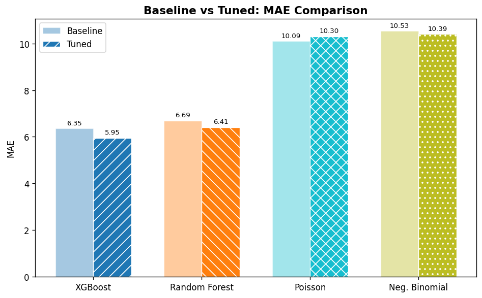
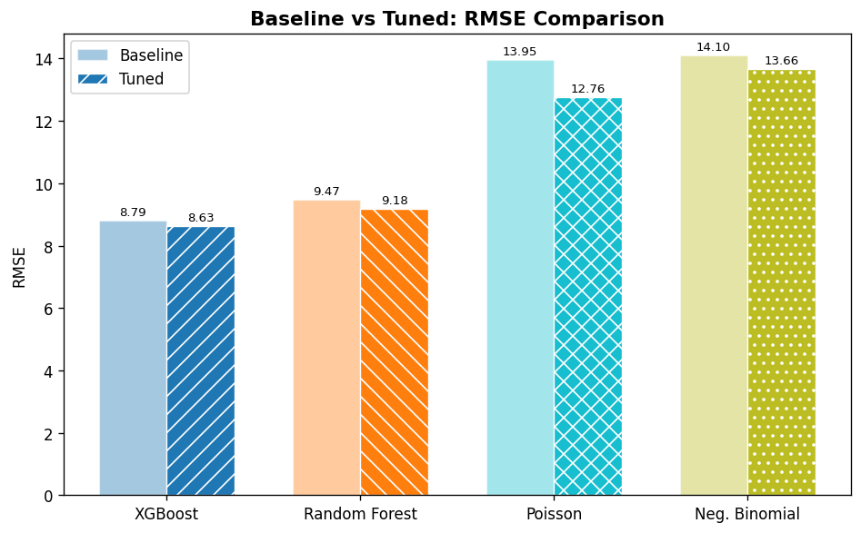

Term Project · DSCI 611
Predicting highway-rail crossing accident frequency using 50 years of FRA accident data merged with NOAA hourly weather observations. Four ML models trained and tuned on 91,312 matched accident-weather records.
By the numbers
Project Overview
This project analyzes the relationship between weather conditions and railroad accident frequency at highway-rail grade crossings across the US. We integrate FRA accident records with NOAA hourly weather data, assign up to 5 nearest weather stations per accident, and aggregate to NOAA climate region-monthly time series for frequency modeling.
Early EDA revealed weather has minimal correlation with accident severity (train speed dominates), but may affect how often accidents occur — leading to a pivot from severity prediction to frequency modeling using aggregated regional data.
Model Results
| Model | Baseline MAE | Tuned MAE | Baseline RMSE | Tuned RMSE | Tuning Method |
|---|---|---|---|---|---|
| XGBoost | 6.35 | 5.95 ✓ | 8.79 | 8.63 | Optuna (30 trials) |
| Random Forest | 6.67 | 6.41 | 9.43 | 9.18 | Optuna (30 trials) |
| Poisson GLM | 10.09 | 10.30 | 13.95 | 12.76 | Forward stepwise + interactions |
| Negative Binomial | 10.53 | 10.39 | 14.10 | 13.66 | Exhaustive subset search |
My contribution: Random Forest model — trained, tuned with Optuna 3-stage Bayesian optimization, and evaluated with mean encoding experiment.
Data Pipeline — 11 Stages
Merges FRA Form 57 + Form 71. Drops 21,243 records with missing coordinates or invalid timestamps. Output: 228,847 clean accidents.
KDTree spatial indexing assigns up to 5 nearest WBAN weather stations per accident within 50 miles. All 228,847 accidents got at least 1 station.
Deduplicates (station, date) pairs. Reduces ~1.1M potential requests to 625,820 unique pairs — 44% fewer downloads needed.
Bulk downloads yearly CSVs from NOAA Global Hourly. Frozen — team members use dvc pull to get the 357MB compressed file.
Timezone-aware temporal matching. Converts local accident time → UTC, tries up to 5 stations in fallback order, finds observation within ±60 min.
Adds train exposure controls (daily train counts, track count, AADT). Parses NOAA encoded strings into numeric columns (TMP, SLP, WND, VIS, CIG).
Aggregates 91k individual records into ~5,400 NOAA climate region-month observations. Enables frequency modeling (count varies across region-months).
Three-way temporal split from params.yaml. Train: 1975–2014, Validation: 2015–2020, Test holdout: 2021–2025. No data leakage.
Pipeline Data Flow
| Stage | Input | Output | Dropped |
|---|---|---|---|
| prepare-accidents | 250,090 | 228,847 | 21,243 (8.5%) |
| assign-stations | 228,847 | 228,847 | 0 |
| fetch-weather | — | 1.3M+ obs | 0 |
| merge-weather | 228,847 | 91,312 | 137,535 (60.1%) |
| aggregate-data | 91,312 | ~5,400 | unit change |
| split-data | ~5,400 | ~5,400 | 0 |
| FINAL DATASET | 250,090 | ~5,400 region-months | — |
Key Challenges & Solutions
CDO v2 API returned HTTP 500 errors. Pivoted to bulk CSV downloads from NOAA Global Hourly — far more reliable at 50-year scale.
Single station: 13% match rate. Five-station fallback raised this to 40–70% by trying alternatives when historical records were missing.
Accidents in local time, weather in UTC. Used timezonefinder + pytz for DST-aware conversion before any temporal matching.
228k × 75k = 17 billion naive comparisons. KDTree reduced this to O(n log m) — station assignment in 5 min instead of 10+ hours.
Individual accidents are always "accident = yes" — can't model frequency. Aggregated to region-months to create count variation for ML.
Mean encoding dropped XGBoost MAE from 5.95 → 3.42 but captured 82% of feature importance from region identity, not weather. Not adopted.
My Contribution — Random Forest Model
I built and tuned the Random Forest regressor for frequency prediction. Used three-stage Optuna Bayesian optimization (30 trials per stage) to tune hyperparameters. Also ran the mean encoding experiment to test whether geographic region identity improved predictions — and documented why we chose not to adopt it despite the metric improvement.
Screenshots & Results

📊 Add model comparison chart here
🗺️ Add accident frequency map hereTeam
Anthi Lyra
@al3858 · Random ForestPhillip Roman
@PhillipJRoman · XGBoostRyan Quinlan
@rqhq · Neg. BinomialMinh Vo
@minhmgnvo · Poisson